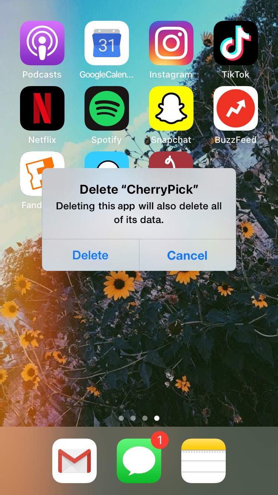

VIII. Log Out Again Because You Found What You Were Looking For
I guess, in the end, CherryPick answered all the questions I came to it with. Was I too picky? No, but knowing what I wanted didn’t necessarily make it easier to find that. Did dating apps really solve all the problems I had with dating? Of course not, they were just another way to meet people. Could CherryPick help me find my perfect man? The answer was looking more and more like a no.
I was kind of surprised to realize I was actually okay with that answer. Forcing myself to match and chat with a ton of guys, to go on dates with them and try to make things work because of one shared interest…that wasn’t working for me. It felt like I was putting more energy into maximizing my chances of meeting someone with CherryPick than I was into considering the guys I was meeting. I perfected my profile, created the perfect bunch, and swiped tirelessly through guys. Then, I talked to them for two minutes before making a snap decision about our future. That balance didn’t feel right.
I never wanted to feel like I was putting all my effort into trying to meet someone. I would much rather do the things I love—theatre, school, spending time with my friends—than try to become what I thought some guy might want. Maybe that’s why I was used to falling for so many theatre boys, or why it felt like I was always dating my friends. I connected with people when I was being my most authentic self.
CherryPick did teach me about dating. It made me think about what I really wanted for myself. I didn’t need some perfect guy to flirt with me at a coffee shop or a dude to sweep me off my feet with a novel first date. I wanted to be happy and true to myself, and at the moment, that felt just as achievable on my own as it would with someone else.
I closed out of CherryPick and pressed down on the app until it was shaking. Then, after considering what I was doing for another minute, I clicked the X. Just like that, CherryPick was gone from my phone forever. Maybe not forever—I could always download it again in the future, but that seemed like it would be a while from now. For the moment, I didn’t need another thing in my life telling me I shouldn’t be single.
It was well past time to get back to experiencing the real world, and I was going to start by going out with my friends.
THE END